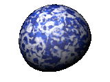
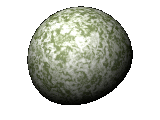
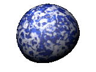
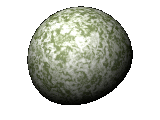

Objects, Planets and Effects
Please read the Conditions of Use regarding the files available on this page.
Unless otherwise indicated, all model files are now POV-Ray 3.1 compatible.
Please read the Conditions of Use regarding the files available on this page.
Unless otherwise indicated, all model files are now POV-Ray 3.1 compatible.
POV-Ray model by Darcy Johnston
Bespin's Cloud City, modelled in POV-Ray 3 by Darcy Johnston using textures from the Star Wars Modelling Alliance.
Download .ZIP file (53K)POV-Ray effect by Howard Day
Great-looking POV-Ray explosion effect using multiple halos - slow to render, but one of the nicest explosion effects I've seen.
POV-Ray 3.1 IncompatiblePOV-Ray include file by Dylan Beattie
Include file defining several of the most well-known planets from the Star Wars galaxy - Hoth, Alderaan, Tatooine and Dagobah. Based on matte paintings from Star Wars: Chronicles, it also includes planet definitions using a halo-based 'atmosphere' effect for horizon shots. The textures on these are OK, but they're not perfect - if you want to have a go at improving them, feel free to send me the improved versions.
POV-Ray 3.1 Incompatible 


